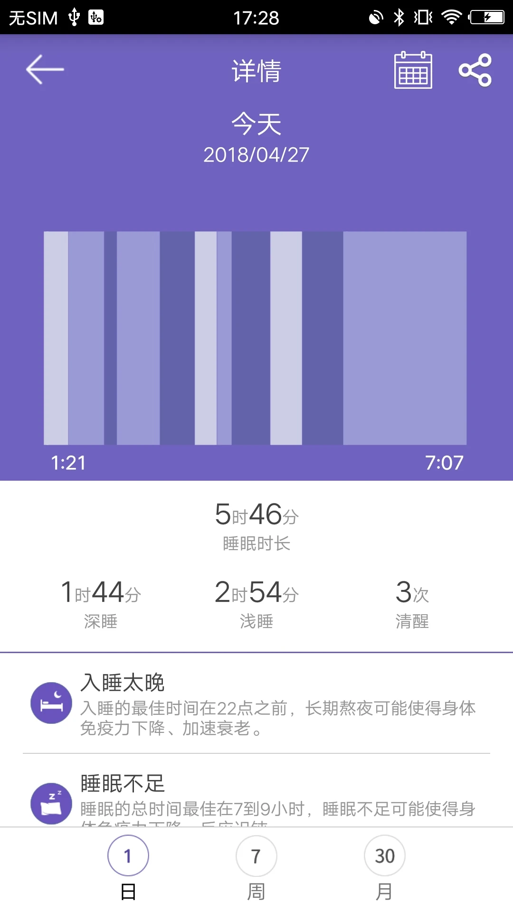
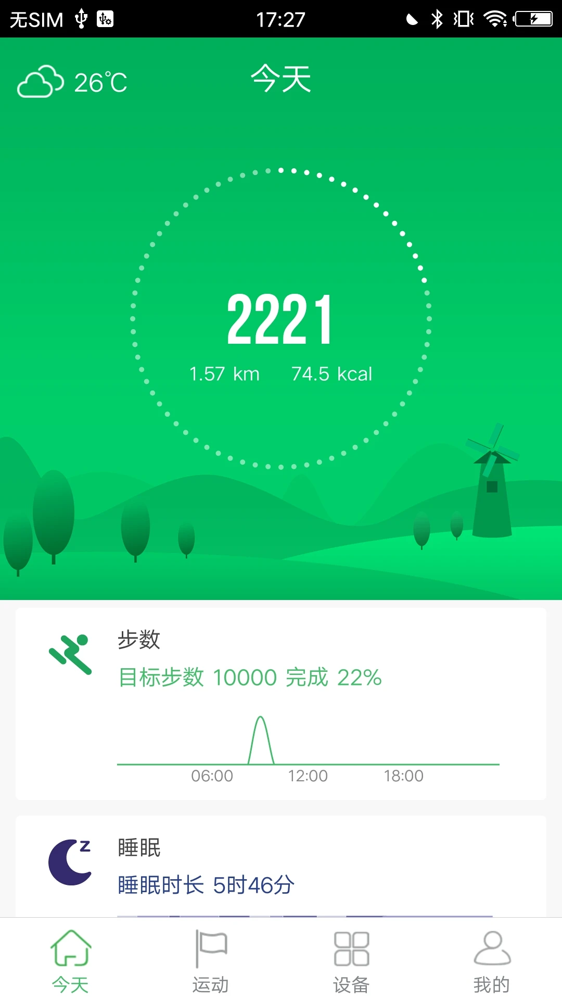

翻了 GloryFit 三年才发现的 4 个隐藏功能，官方都没写在首页
HealthKit 互通的正确姿势、手表长按换表盘、自定义背景图片、iOS 蓝牙感叹号的根治方案——这些藏得很深的功能，90% 用户没碰过。
你以为 GloryFit官网 只是几块钱手表附赠的"看步数"App？我也是这么想的——直到把它和苹果健康、表盘商店、系统设置翻来覆去折腾了大半年，才发现这玩意儿藏着一堆官方没宣传的私货。
先说说大家普遍怎么用它：绑定手表，早上看一眼步数，晚上瞟一下睡眠，偶尔点开心率。配对成功之后就再也没碰过设置页，更别说那些藏在二级、三级菜单里的功能了。下面这四个，是我觉得真有用、而且门槛不高的。
藏在"我的"里面的 HealthKit 互通——比你想的强得多
我一度以为 GloryFit 跟苹果健康打通就是个"可选开关"，开了也就那样。直到某天 Siri 突然跟我说"你今天已经走了 8342 步"——我才反应过来，GloryFit 同步过去的数据不只是躺在健康 App 里，Siri 也能直接读。
具体能同步什么？除了大家知道的步数、距离、心率、睡眠、卡路里，如果你手上的设备支持血压和血氧，这两项也能进健康 App。反过来更有意思：GloryFit 默认只"上传"不"读取"——也就是说 Apple Watch 的数据不会反向灌进来，但你可以在权限里手动开，让 GloryFit 也显示苹果那边的数值。

开启路径藏得挺深：我的 → HealthKit（有的版本叫"设置 → 数据同步 → HealthKit"）。首次打开系统会弹权限框，选"全部允许"就行。同步不是即时的，一般延迟几秒到几分钟，急的话强制退出 App 重开一下就触发了。
有个坑要提醒：如果你同时戴 Apple Watch 和 GloryFit 手表，步数会被 HealthKit 合并取较大值，心率曲线可能串在一起混着显示。同一时段只戴一只手表就不会有冲突。
手表长按换表盘——99% 的人不知道
大多数人换表盘的操作是：掏出手机 → 打开 GloryFit → 进设备页 → 选表盘 → 下载 → 等同步。一套下来少说半分钟。
实际上很多型号支持在手表上直接长按表盘——长按下会弹出快捷更换界面，左右滑动就能切已经安装好的表盘，松手确认。整个过程不到 3 秒，完全不用掏手机。
前提是你得先在 App 里把常用的几款下载好。手表一般能存 3~10 个表盘（看具体型号），建议保持在 3~5 款常用的，多了不仅占空间，切换时滑动也费劲。
Pro 版本还有个更狠的：自定义背景图片。进表盘页选"自定义"，从相册挑一张照片，调整时间显示位置和字体颜色，保存后同步过去就行。非 Pro 版没有这个功能，别找了。

配对失败别慌——这六步排查比客服管用
我见过最多的问题就是"GloryFit 搜不到手表"。翻了 GloryFit文档 里官方给的排查步骤，不够细，我自己总结了一套按顺序走的流程，命中率很高：
先查电量——手表低于 10% 时蓝牙会休眠或者发射功率降低，先充 5~10 分钟。然后确认手表没连着另一台手机，要是之前绑过别的手机，得先在那台手机的 App 里解绑，或者手表恢复出厂。
手机蓝牙忽略历史设备是关键一步。iOS 用户进"设置 → 蓝牙"，找到手表名（一般是 Q18、T11、W03 这类），点右边蓝色的 "i" 选"忽略此设备"。Android 类似，长按手表名取消配对。然后关蓝牙等 5 秒再开。
Android 用户别忘了开 GPS 定位权限——GloryFit 在 Android 6.0 以上搜蓝牙设备时依赖系统定位开关，下拉通知栏把"位置信息"点亮。
最后两步：把手表贴紧手机（中间别隔金属、厚皮革、水杯），还不行就重启手机。我的经验是走到第四步基本都能解决，真到了重启那步，大概率是手表之前绑过别的设备没解干净。
iOS 蓝牙感叹号——根治方法只有一个
这个感叹号太恶心了：蓝牙列表里 GloryFit 设备名后面挂个蓝色感叹号，App 显示"已连接"但实际数据同步断断续续，重配对几次也消不掉。
感叹号的含义很明确：曾经配对过但当前连接异常，蓝牙缓存脏了。一般出现在首次配对被打断（锁屏了、手表没电了、App 闪退了）、或者更新 GloryFit 版本后。
常规做法是忽略设备 → 关蓝牙 → 重开 → 重配对。但我发现只做这三步有时候还是会复发，手表上一起执行恢复出厂效果干净很多：手表进"设置 → 系统 → 恢复出厂"，确认后手表重启、蓝牙名重置。注意恢复出厂会清手表上未同步的数据，操作前手动同步一次。
如果这一套下来还是有感叹号，说明 iOS 蓝牙控制器的缓存彻底脏了——iOS 上没有"一键清蓝牙缓存"，唯一办法是还原网络设置：先忽略所有已配对蓝牙设备，关蓝牙和 Wi-Fi，飞行模式开 30 秒，重启手机，然后进"设置 → 通用 → 还原 → 还原网络设置"。这招比较暴力（会清掉所有 Wi-Fi 密码和蓝牙配对），但确实能根治。
别把它当玩具——这些场景真的能用
说了这么多，到底什么人值得折腾 GloryFit 这堆隐藏功能？
iPhone 用户配便宜手表的——HealthKit 打通后，花几十块的 GloryFit 手表就能给苹果健康喂数据，Siri 也能查。总比 Apple Watch 便宜。
喜欢换风格但嫌麻烦的——先在 App 里下好几款，手表上长按切，几秒搞定。换季、运动、面试随时换。
蓝牙配对老出问题的——按我那六步走，基本能省掉找客服的功夫。
说到底，GloryFit 这 App 不像那些大厂产品把功能都堆在首页给你点——它的隐藏功能散在各处，官方文档也没全写。但翻一遍设置页、长按一下表盘、把 HealthKit 打开，你会发现这玩意儿比"看步数"有意思多了。
如果你也有 GloryFit 手表，今晚睡前花十分钟把 HealthKit 开开、试试手表长按换表盘——感受一下它不是只是个步数计数器。另外，这套关于 GloryFit 的实用资料我也顺手同步到了 GitHub、Gitee 和 GitCode，国内访问哪个快就用哪个。